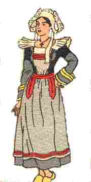
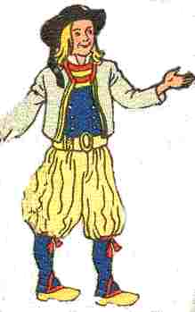

An Droukrañs
Ton
1. Ma oufenn-me lenn ha skrivañ, evel a ouzon rimel,
Me a refe ur zon nevez, o, la la la la la la la la,
Me a refe ur zon nevez, ur zon ha ne venn ket pell!
2. Me wel erru, va mestrezig, dont a ra 'trezek on ti;
Mar gellan-me kaoud an tu,me a brezego outi.
3. -Drouglivet, va mestrezig koant, drouklivet-bras ho kavan,
Abaoe m'ho kwelliz er pardon, e mizeven diwezhañ.
4. Ha pa venn-me ta, den yaouank, ha pa venn-me drouklivet!
An derzhienn vras zo bet ganin, abaoe Pardon Folgoad.
5. Deuit-c'hwi ganin, va dousik, deuit tre el liorzh ganin,
Me ziskouezo deoc'h ur rozenn eno 'touez al louzoù fin;
6. Ker gae ha ker brav oa eno hag hi savet war ar bod!
Diryaou beure pa he c'haviz oe ker ruzh hag ho tivchod.
7. Deoc'h e lavariz serrañ mat tor ho kalon, va mestrez,
Na vije aet an dud ebarzh, 'touez al louzoù hag ar frouezh.
8. Ha n'ho-peus ket sentet ouzin, hag ho-peus eñ digoret,
Ha setu gweñvet ar vleuñvenn, kollet ganeoc'h ho kened.
9. Ar garantez, ar yaouankiz, kaerañ traoù zo er bed-man;
Bleuñviñ a reont ha koenñviñ an eil hag eben buan.
10. Amzer om bet o 'n em garout n'e-deus ket padet gwall bell;
Tremen e-deus graet, plac'h yaouang, evel eur barrad avel!


Extraits des carnets de collecte de La Villemarqué

|
P.20
DISUL VINTIN HA PA ZAVAN Disul vintin ha pa zavan 'hont da kas va zaout er-maes, Me gle'e va mestrez o kanañ hag he anaas deus he mouezh. ... Me zo sur d'he barlant, mar gellan kavoud an tu, Ma ve va mestrez amañ pehini garan barfet: Mar ve daou tri devezh amañ n'em-be na naon na sec'hed. ... Ar c'hentañ m'eus bet 'n enour danvezout va mestrez Oa barzh an iliz parrez pa oa gan an oferenn-bred. |
Evel ur bouked lavand, pe ve ar foz ha lis.
Me ... hi permetet mond e-kreizh an iliz. A-benn ur mac'hiad goude 'voa echuet an oferenn Me a welaz va mestrez o diskenn an diri gwenn. Skrivet a-istribilh Kalz demeus ar verc'hed yaouank e oa ganti 'n ur bandenn: - Debonjour d'eoc'h-hu, mestrez, debonjour, a laran d'eoc'h. Ur bouchig ar gwir garantez a c'houlennan diganeoc'h. |
- N'am eus ket refuzet biskoazh ... ur bouch na daou
Mez Doue a permeto 'vefem-ni pried hon-daou. (5) Deuit-c'hwi ganin, va mestrez , deuit ganin d'am jardin Da gweloud ar rozennig kaer em'eus gwelet diryaou vintin. (6 )Da gou'oud hag a zo gweñvet pe chouket e-maez ar bod. Ha ... pa hi gweliz hi oa liv gant ho div chod (8) Setu aze va mestrezig ... az klask Setu gweñvet ar rozennig hag hi chomet er flas. |
|
P.32
MAR OUIFEN-ME SKRIV HA LENN A. (1) Mar ouifen-me skriv ha lenn Giz a ouien kompoziñ (bis) Me a skrivfe ur son kaer O [A vije d'am fantazi.] B. Me a skrivfe ur son kaer Ya ne v(ef)en ket pell (bis) Savet tre daou zen yaouank O Ha 'n em gare fidel. C. 'Tre an daou zen-se A zo amañ ar garantez (bis) Laouen zo vel an eostik O kanañ da viz mae. D. - Adieu, O, ma mestrezik Mond a ran d'ho kuitaat (bis) Pa n'eo kontant ho ligne O Nag ho mamm, nag ho tad. E. - Ma ligne a zo kontrol Deus ar pezh a zizeran (bis) Ar garantez a bado O Pad an daou pe tri bloaz. F. - Tri bloaz zo kalz ha nebeut, Nebeut a amzer da dremen (bis) Mond a ran d'an enezenn O Zo añvet Sant Malo. |
P.33
G. E Sant Malo, ma mestrezig, A zo un enezenn (bis) Batiset war ar mor don O Designet d'an amzer yen. H. Mar e ouifen-me 'r zonik ... a ven bis) Me a pedfe Doue noz ha mintin O Me a pedfe d'Ezhañ War benn ma daoulin. P.215 ME WEL ERRU MA MESTREZIK (2) Me wel erru ma mestrezik, Dont a ra 'trezek hon ti; Ha mar hellan kavoud an tu, Me a barlañto ganti. (3) - Eurvat deoc'h, ma mestrezik, Eurvat deoc'h e lavaran. Eo drouglivet bras ho kavan 'Baoe 'meus ho kwel't diwezhañ. (4) - Nag e vin-me, ma servicher, Nag e vin-me drouglivet? Pellig zo amzer abaoe En em ket ni welet. (4) Pellig a zo amzer abaoe En em ket ni welet. Hag ouzhpenn-se, ma servicher, An derzienn bras em-eus bet. |
(7) - M'am-eus laret, ma mestrez
Serriñ mat dor ho chardin. Ne vije ket aet an dud barzh E-touez al louzoù fin. (8) C'hwi n'ho-peus ket sentet ouzhin Hen pezo lezet digor: Ema gweñvet ar rozennik Kollet ganeoc'h hoc'h inor . (5) Deut-c'hwi ganin-me, ma mestrez Deut tre ganin d'am jardin Me ziskouezo d'eoc'h 'r rozennik 'M eus kavet diryaou vintin. (6) Ema eno ma mestrezik Ema eno kost ar bod, Diryaou vintin ha p'he c'haven E oa ruz vel d'ho tivchod. (a) Ar rozenn-se, va mestrez, Hirio a zo gweñvet 'N dra-se zeblant em c'halon Penaos ne n'em garomp ket. P.263 DEVAT D'OC'H-HU VA MESTREZIK (b) Devat d'oc'h-hu, va mestrezik Devat d'oc'h-hu, a laran (3) Gant drouglivet ho kavan Abaoe 'meus ho gwel't diwezhañ. |
(4) Ha pa vin-me 'ta den yaouank
Ha pa ven drouklivet? (c) Ha pellik-zo an amzer D'abaoe 'n emket ni gwelet. (d) Me 'm eus ho cheñchet, den yaouank Evit un nebeut amzer Ha n'ho-peus ket laret din-me E vijet ma zervicher. (e) Gant an anal deus ho kenoù Pehini zeu d'ho soulajiñ Pa ne deu ket ma mestrezik N'ouien ket petra rin. (5) Deuit-c'hwi ganin va mestrezik Deuit-c'hwi ganin d'am jardin. Me ziskouezo d'eoc'h rozennoù Hag a bep sort louzoù fin. (6) Me ziskouezo d'eoc'h rozennoù Diryaou vintin am-eus kavet Pa a vez unan gweñvet Ha, siwazh, n'en em gavomp ket. (7) - Me 'm-eus laret d'eoc'h, va mestrez, Serriñ mat 'n nor en ho jardin. Na vije ket aet an dud E-barzh e-touez al louzoù fin. (8) N'ho-peus ket c'hwi sentet ouzhin Ho-peus hi lezet digor. Setu kollet ar rozennoù Kollet ganeoc'h hoc'h enor . |
(f) Me 'm-eus ur feunteun a-dreñv ma zi
A zo ... Peb mintin a yen d'he gweled A rejouiso ma c'halon. Variante (2) Me wel erru ma mestrezik Dont a ra trezek ho ti, Ha mar hellan kavoud an tu Me a brezhego ganti. (3) - Drouglivet-bras, ma mestrezik, C'hoazh, drouglivet ho kavan, Abaoe 'm-eus ho kwelet d'ar pardon Ya, 'baoe 'm-eus ho kwelet diwezhañ. (4) - Hag ouzhpenn-se, ma servicher, An derien-bras em-eus bet. (5) ... ur rozennik Eno, 'touez al louzoù fin, (g) Nemed nikun ane(zh)e eno a zeuy Da zevel war ar bod. (6) Ken ge ha ken moan em liorzh Savet eno war ar bod Ha diryaou beure pa he c'haven A oa ruz 'vel ho tivchod. (9) Ar yaouankiz zo ur bouked Ar bravañ zo er bed-mañ Gweñviñ a reont, siwazh deomp-ni, Kenkoulz an eil hag eben. |